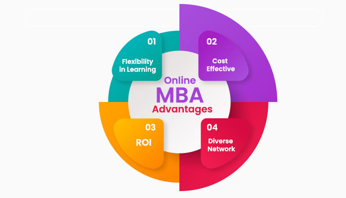
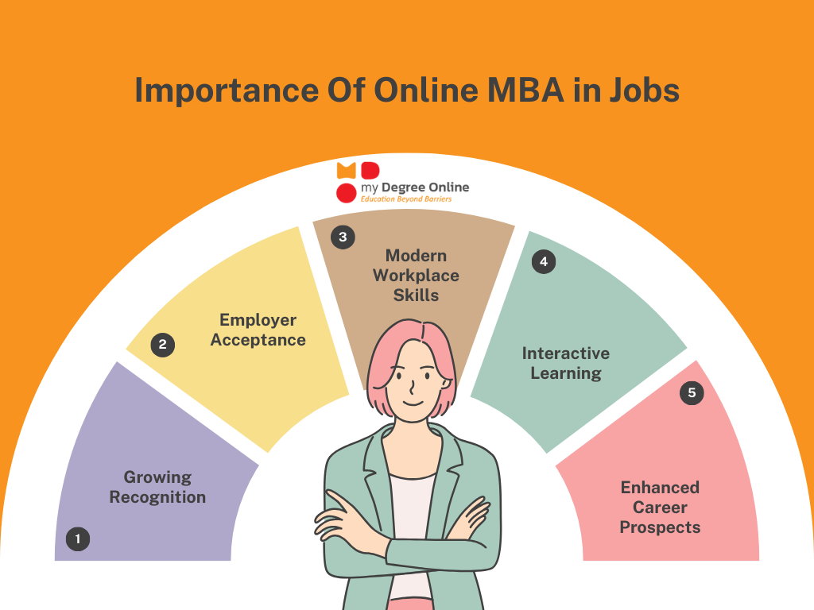
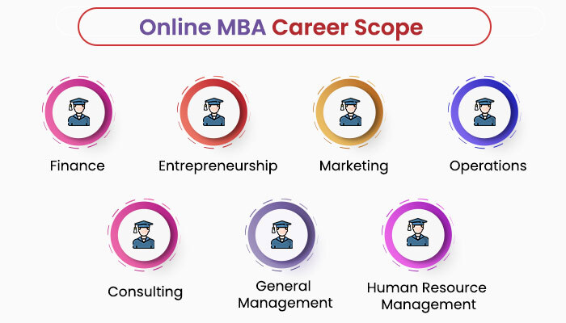
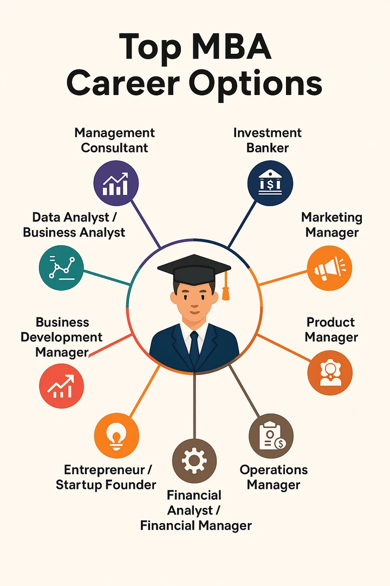

Explore articles about Online MBA, career growth, business education, and management skills.
Distance MBA – A Smart Choice for Working Professionals Introduction In today’s fast-changing business world, having a management qualification can open the door to better career opportunities, higher salaries, and leadership positions. However, many students and working professionals are unable to pursue a regular full-time MBA because of job commitments, financial limitations, or personal responsibilities. This is where a Distance MBA becomes the perfect solution. A Distance MBA offers flexibility, affordability, and convenience, allowing students to continue their education without attending regular on-campus classes. With the rise of digital learning platforms and online study materials, distance education has become more effective and widely accepted by employers.
Students can study online through digital learning platforms, recorded lectures, and virtual classes from anywhere.
Online MBA programs help students improve leadership, communication, and business management skills.



Distance MBA programs provide flexible learning opportunities, while regular MBA programs offer classroom-based education.
Working professionals often prefer Online MBA programs because they can continue working while studying.
What is a Distance MBA?
A Distance MBA is a flexible postgraduate management program that allows students to study remotely through online classes, recorded lectures, digital materials, and virtual assignments. It is mainly designed for working professionals and students who cannot attend regular college classes
What is a Regular MBA?
A Regular MBA is a full-time classroom-based program where students attend on-campus lectures, participate in group discussions, internships, presentations, and networking events. It provides a more immersive academic experience.
MBA graduates can explore management and leadership roles across multiple industries.

Join our flexible Online MBA Course in Chennai and build a successful career.
Contact Us